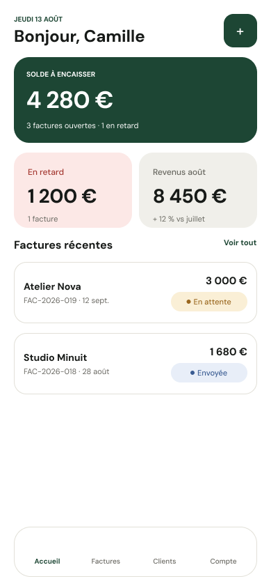
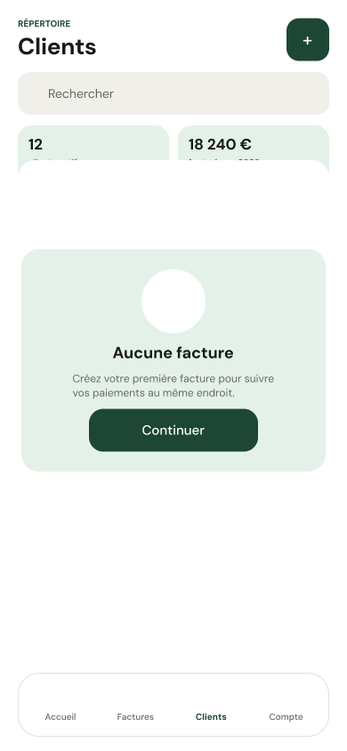

Selected work · 2021–2026
Products, platforms and systems built to make complexity usable.
Start with real team constraints and delivered work, then explore independent prototypes. Choose a project type below; each card states how far the work went.
Company & team work Independent exploration
Browse by project type
Find the kind of work that matters to you.
Type helps you navigate. Delivery status tells you what was actually made.
Showing all six projects · delivered work first


Launched websiteCompany team
01
B2B website · Responsive platform
FTL Group Website
A multilingual website translating a complex China–Europe logistics network into clearer audience routes and commercial actions.

 System → product
System → product
Design system deliveredCompany team
02
Design system · Logistics software
WMS Design System
Reusable patterns that brought consistency and a more reliable designer–developer handoff to dense logistics workflows.

Developed · not operatedCompany team
03
Assisted service · Shared iPad
LVV Shipping System
A guided multilingual flow for staff and international shoppers completing cross-border shipping together.
Brand strategy / B2B SaaS
A brand system
built to move.
One system
Identity
Identity
Digital
Lifecycle
Sales
Built to stay coherent as it grows.
Brand assets deliveredCompany project
04
Brand & digital · B2B logistics
Esendeo
One visual foundation connecting identity, website, lifecycle communication and B2B sales.
Prototype v0.5
No more rebuilding stories under pressure.
18answered promptsIntegrate AI into a design workflow.
Self-initiated prototypeIndependent
05
Independent browser prototype
Interview Memory System
A privacy-aware workspace turning scattered career evidence into reusable interview stories.


Mobile-first flowIndependent concept · not launchedIndependent
06
Mobile product · Independent concept
Facture Mobile
An independent mobile concept exploring how freelancers could create clients, issue invoices and track payment status in one flow.